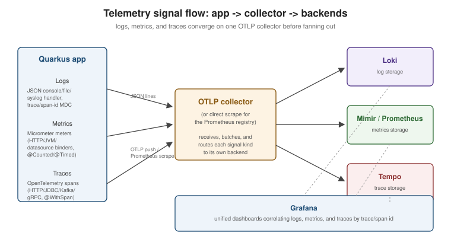

Observability: Health, Logging, Metrics, Tracing
|
This content was generated with the assistance of AI and should be verified against the official documentation before being relied on in production. |
Observability in Quarkus rests on three extensions that can be added independently but are designed to work
together: quarkus-smallrye-health (is the application up, and is it ready to take traffic), quarkus-micrometer
(what is it doing, in numbers), and quarkus-opentelemetry (what happened to this one request, end to end,
across every service it touched). Logging sits underneath all three — every one of them can correlate its own
output with the current trace via the same mechanism. This page covers all four together; REST-specific and
virtual-thread-specific monitoring concerns are only summarised here and covered in depth on
REST Services and Virtual
Threads respectively.
See also Monitoring & Alerting for turning these signals into dashboards and alerts.
Health checks with SmallRye Health
./mvnw quarkus:add-extension -Dextensions=smallrye-healthAdding the extension alone exposes three endpoints without any code: /q/health/live (liveness), /q/health/ready
(readiness), and /q/health (the union of both). Many extensions register their own readiness check
automatically the moment they are on the classpath — quarkus-agroal (the datasource pool) and
quarkus-messaging-kafka (broker connectivity) are the most common examples — so a project that only adds a
datasource and smallrye-health already gets a meaningful /q/health/ready for free.
Custom checks
package com.example.health;
import org.eclipse.microprofile.health.HealthCheck;
import org.eclipse.microprofile.health.HealthCheckResponse;
import org.eclipse.microprofile.health.Liveness;
import org.eclipse.microprofile.health.Readiness;
import org.eclipse.microprofile.health.Startup;
import jakarta.enterprise.context.ApplicationScoped;
import jakarta.inject.Inject;
@ApplicationScoped
class OrdersLivenessCheck implements HealthCheck {
@Override
@Liveness
public HealthCheckResponse call() {
return HealthCheckResponse.up("orders-service-alive");
}
}
@ApplicationScoped
class DownstreamReadinessCheck implements HealthCheck {
@Inject
DownstreamPingClient pingClient;
@Override
@Readiness
public HealthCheckResponse call() {
boolean reachable = pingClient.ping();
return HealthCheckResponse.named("downstream-api")
.status(reachable)
.withData("checkedAt", System.currentTimeMillis())
.build();
}
}
@ApplicationScoped
class CacheWarmupCheck implements HealthCheck {
@Inject
CacheWarmupState state;
@Override
@Startup
public HealthCheckResponse call() {
return HealthCheckResponse.status("cache-warmup", state.isWarm());
}
}@Liveness answers "should this instance be restarted" — a failing liveness check should mean the process is
in a state it cannot recover from on its own (deadlocked, unrecoverable internal error), not merely "temporarily
overloaded"; a flapping liveness probe causes an orchestrator to restart-loop an instance that would otherwise
have recovered. @Readiness answers "should traffic be routed to this instance right now" — it can legitimately
flip between up and down repeatedly (a downstream dependency blips) without the process being restarted.
@Startup gates readiness until an initial startup sequence (cache warm-up, initial data load) completes, and is
checked once before the instance is considered ready for the first time.
The /q/health* endpoints and Kubernetes probe wiring
| Endpoint | Aggregates |
|---|---|
|
All |
|
All |
|
All |
|
The union of all three groups. |
Each responds 200 with a JSON body listing every check’s individual status when all checks in the group pass,
and 503 the moment any one of them reports DOWN. The quarkus-kubernetes extension reads these same paths
to generate the Deployment manifest’s own liveness/readiness probes automatically:
quarkus.kubernetes.liveness-probe.path=/q/health/live
quarkus.kubernetes.readiness-probe.path=/q/health/ready
quarkus.kubernetes.startup-probe.path=/q/health/startedwhich is also the reason the liveness/readiness distinction above matters operationally, not just semantically — a check registered under the wrong annotation changes what Kubernetes actually does when it fails (restart the pod vs. pull it out of the Service’s endpoint list).
The info endpoint
quarkus-info exposes /q/info, a build/runtime metadata endpoint distinct from health — it never reports a
failure, it just describes the running instance: build timestamp, Git commit (when quarkus.info.git.enabled=true
and the module was built inside a Git working copy), OS and Java runtime details, and any extension-contributed
section (a datasource’s JDBC URL host, without credentials). It is useful for confirming exactly which build and
commit is running in a given environment without cross-referencing a separate deployment log:
./mvnw quarkus:add-extension -Dextensions=infoquarkus.info.git.enabled=true
quarkus.info.build.enabled=true
quarkus.info.os.enabled=trueLogging
Categories and levels
Quarkus logging is configured per category (usually a package or class name), with quarkus.log.level
setting the root:
quarkus.log.level=INFO
quarkus.log.category."com.example.orders".level=DEBUG
quarkus.log.category."org.hibernate.SQL".level=DEBUG
quarkus.log.min-level=TRACEquarkus.log.min-level caps the lowest level any category can ever be raised to (at build time, categories
below it are compiled out entirely for performance in native builds), so a category-level override above it has
no effect unless the floor is lowered too. Per-category levels set via quarkus.log.category.* are
runtime-reloadable in dev mode and, in a packaged application, mutable without a restart via the same
configuration mechanism (an updated environment variable or a mounted config file picked up on the next config
refresh), which is the practical way to raise a specific category’s verbosity in production for a short window
without redeploying.
Handlers: console, JSON, file, syslog
./mvnw quarkus:add-extension -Dextensions=logging-json# console (default handler, human-readable by default)
quarkus.log.console.format=%d{HH:mm:ss} %-5p [%c{2.}] (%t) %s%e%n
quarkus.log.console.json=true
# file
quarkus.log.file.enable=true
quarkus.log.file.path=/var/log/orders-service/app.log
quarkus.log.file.rotation.max-file-size=10M
quarkus.log.file.rotation.max-backup-index=5
# syslog
quarkus.log.syslog.enable=true
quarkus.log.syslog.endpoint=syslog-collector:514
quarkus.log.syslog.protocol=tcpquarkus-logging-json switches any of these handlers to structured JSON output (one JSON object per log line,
including MDC and, when quarkus-opentelemetry is present, the current trace/span ID) instead of the
quarkus.log.console.format pattern — structured output is what makes centralised log aggregation practical, since
the collector can then index individual fields instead of regex-parsing free text.
Centralised log management
Quarkus does not ship a Graylog/Logstash/Fluentd client of its own for the general case — the standard pattern
is: emit JSON (quarkus.log.console.json=true), let the container runtime capture stdout, and let a sidecar or
node-level agent (Filebeat, Fluent Bit, the Fluentd daemonset) ship it to the aggregator, which is what most
Kubernetes logging stacks already do regardless of the application inside the pod. quarkus-logging-gelf is the
one extension that talks a specific backend’s wire protocol directly — the Graylog Extended Log Format — useful
when there is no log-shipping sidecar available:
./mvnw quarkus:add-extension -Dextensions=logging-gelfquarkus.log.handler.gelf.enabled=true
quarkus.log.handler.gelf.host=udp:graylog.example.com
quarkus.log.handler.gelf.port=12201OpenTelemetry logging
With quarkus-opentelemetry present, every log record’s MDC automatically carries traceId/spanId for the
request it was emitted during, so a JSON log line and a distributed trace can be correlated in whichever backend
receives both (see OpenTelemetry). Quarkus can additionally export log records themselves as OTLP log
records, alongside traces and metrics, rather than (or in addition to) writing them to a file/console handler:
quarkus.otel.logs.enabled=true
quarkus.otel.exporter.otlp.logs.endpoint=http://otel-collector:4317Metrics with Micrometer
./mvnw quarkus:add-extension -Dextensions=micrometer-registry-prometheusAdding a registry extension (micrometer-registry-prometheus here) pulls in quarkus-micrometer itself and wires
that registry as the target for every meter Quarkus and its extensions record. Multiple registries can be active
at once (a Prometheus registry for scraping plus a micrometer-registry-otlp push registry, for example); every
meter is recorded once and fanned out to whichever registries are present.
MeterRegistry, @Counted, and @Timed
package com.example.orders;
import io.micrometer.core.annotation.Counted;
import io.micrometer.core.annotation.Timed;
import io.micrometer.core.instrument.MeterRegistry;
import jakarta.enterprise.context.ApplicationScoped;
import jakarta.inject.Inject;
import jakarta.ws.rs.POST;
import jakarta.ws.rs.Path;
@ApplicationScoped
@Path("/orders")
public class OrderResource {
@Inject
MeterRegistry registry;
@POST
@Counted(value = "orders.created", description = "Number of orders created")
@Timed(value = "orders.create.duration", description = "Time to create an order")
public void create() {
registry.counter("orders.created.manual", "channel", "rest").increment();
}
}@Counted/@Timed (io.micrometer.core.annotation) instrument a method declaratively without touching its body;
injecting MeterRegistry directly is the escape hatch for a metric whose tags depend on runtime data (here, a
channel tag) that an annotation’s static value cannot express.
Built-in binders
Once quarkus-micrometer is present, several meter families are registered automatically with no code:
HTTP server request metrics (http.server.requests, tagged by method/status/URI template), JVM metrics (heap and
non-heap memory, garbage-collection pause time, live thread count), and datasource metrics for Agroal-managed
pools (agroal.active.count, agroal.available.count, agroal.acquire.count). Each binder can be disabled
individually if it is not wanted:
quarkus.micrometer.binder.http-server.enabled=true
quarkus.micrometer.binder.jvm=true
quarkus.micrometer.binder.datasource.enabled=trueThe Prometheus registry and /q/metrics
micrometer-registry-prometheus exposes every registered meter, in Prometheus’s own text exposition format, at
/q/metrics — see the Prometheus reference for how a Prometheus server
scrapes that endpoint, the resulting metric types, and building alerting/dashboards on top of it. Distinguishing
this from the OpenTelemetry metrics pipeline below matters: the Prometheus registry is pull-based (Prometheus
scrapes /q/metrics on its own schedule) while OTLP metrics export is push-based (Quarkus sends metrics to a
collector on its own interval) — a project can run either or, via the bridge described next, both from the same
set of meters.
OpenTelemetry
./mvnw quarkus:add-extension -Dextensions=opentelemetryquarkus.application.name=orders-service
quarkus.otel.exporter.otlp.endpoint=http://otel-collector:4317
quarkus.otel.traces.sampler=parentbased_traceidratio
quarkus.otel.traces.sampler.arg=0.25Automatic instrumentation and context propagation
quarkus-opentelemetry instruments the extensions most likely to matter for a distributed trace without any
code change: Quarkus REST server and client calls, JDBC statements (through the Agroal datasource), Kafka
producers/consumers, and gRPC calls each create their own span automatically, and the trace context (the
current trace/span ID) propagates across each of those boundaries — an inbound HTTP request’s trace ID is the
same one attached to the JDBC query and the outbound REST client call it triggers, and the same one Kafka carries
in message headers to a downstream consumer. Propagation across reactive/async hops (a Uni continuation, an
event-loop-to-worker-thread handoff, a @RunOnVirtualThread method) is handled by the same context-propagation
machinery Quarkus already uses for CDI request-scoped beans, so a span started before an asynchronous boundary
still shows up as the parent of spans created after it.
Sampling
quarkus.otel.traces.sampler controls what fraction of traces are actually recorded and exported — parentbased_always_on (the default; export everything, but never override a sampling decision already made by
an upstream caller), parentbased_traceidratio with quarkus.otel.traces.sampler.arg as the ratio (shown above),
or always_off to disable trace export entirely while keeping metrics/logs. Consistent sampling across a
distributed system relies on every service using a parentbased_* sampler, so a downstream service does not
independently decide to drop a trace its caller chose to keep.
Manual spans: @WithSpan and the Tracer API
package com.example.orders;
import io.opentelemetry.api.trace.Span;
import io.opentelemetry.api.trace.SpanBuilder;
import io.opentelemetry.api.trace.Tracer;
import io.opentelemetry.instrumentation.annotations.SpanAttribute;
import io.opentelemetry.instrumentation.annotations.WithSpan;
import jakarta.enterprise.context.ApplicationScoped;
import jakarta.inject.Inject;
@ApplicationScoped
public class PricingEngine {
@Inject
Tracer tracer;
@WithSpan("pricing.calculate")
public double calculate(@SpanAttribute("order.id") String orderId, double baseAmount) {
return applyDiscounts(orderId, baseAmount);
}
private double applyDiscounts(String orderId, double baseAmount) {
SpanBuilder builder = tracer.spanBuilder("pricing.apply-discounts");
Span span = builder.startSpan();
try {
span.setAttribute("order.id", orderId);
return baseAmount * 0.9;
} finally {
span.end();
}
}
}@WithSpan (io.opentelemetry.instrumentation.annotations) is the declarative shortcut for a method whose whole
body should be one span, with @SpanAttribute binding parameters onto it; injecting the Tracer directly is
needed for anything an annotation cannot express — a span that only covers part of a method, or one whose
attributes depend on values not known until partway through execution.
The Micrometer → OpenTelemetry bridge
quarkus-micrometer-opentelemetry re-exports every meter already recorded through MeterRegistry (including the
built-in HTTP/JVM/datasource binders and any @Counted/@Timed metric) as OpenTelemetry metrics, so a project
that has already instrumented its code with Micrometer does not need to duplicate that work with the OTel Metrics
API just to get metrics into an OTLP-based backend:
./mvnw quarkus:add-extension -Dextensions=micrometer-opentelemetryWith the bridge active, Micrometer remains the instrumentation API used in application code; OpenTelemetry becomes purely an additional export path for the same data, alongside (or instead of) the Prometheus registry.
Observability Dev Services and the Grafana OTel-LGTM stack
In dev mode and for @QuarkusTest, adding quarkus-opentelemetry (or quarkus-micrometer-opentelemetry) without
configuring quarkus.otel.exporter.otlp.endpoint triggers Dev Services to start a containerised Grafana
OTel-LGTM stack automatically — an all-in-one image bundling an OTLP collector, Loki (logs), Grafana
(the UI), Tempo (traces), and Mimir/Prometheus (metrics) — and points the application’s exporters at it,
with the Grafana UI’s URL printed to the console/Dev UI. This gives full local trace/metric/log exploration with
zero backend setup during development; it is a development-time-only convenience and plays no part in a
production deployment, which should point quarkus.otel.exporter.otlp.endpoint at a real collector as shown
earlier.
Java Flight Recorder
Independently of any Quarkus extension, the JDK’s own Java Flight Recorder can profile a running Quarkus
application — JVM-level events (GC pauses, allocation, thread contention, and, for virtual threads, pinning via
jdk.VirtualThreadPinned, see Virtual Threads) with very low
overhead, viewable afterwards in JDK Mission Control:
java -XX:StartFlightRecording=filename=recording.jfr,duration=60s -jar target/quarkus-app/quarkus-run.jarJFR is complementary to, not a replacement for, the application-level signals above: it answers "what was the JVM itself doing" during an incident, where Micrometer/OpenTelemetry answer "what was the application doing" at the request/span level.
Signal flow and further reading

See the Prometheus reference for scraping, PromQL, and alerting on the
metrics this page’s /q/metrics endpoint exposes, and
the Spring Boot equivalent for how the same three
signals (health, metrics, tracing) are wired up in a Spring Boot application via Actuator and Micrometer Tracing,
which shares the same Micrometer API this page describes.